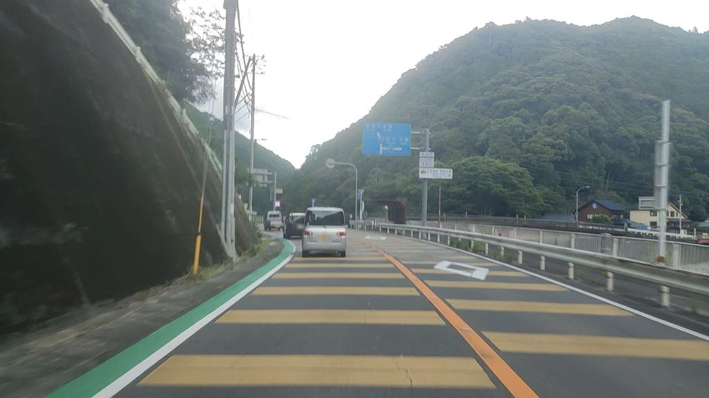
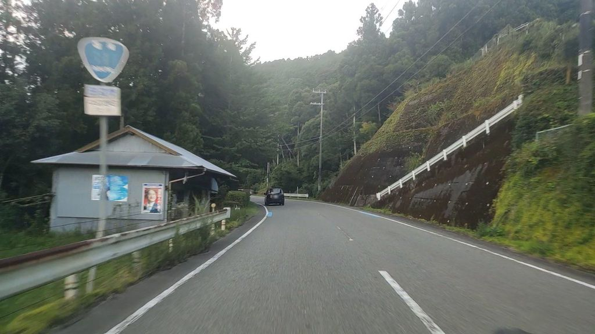
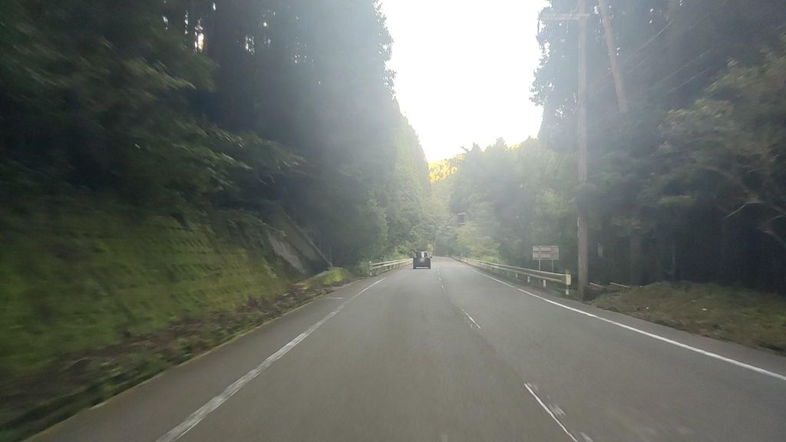
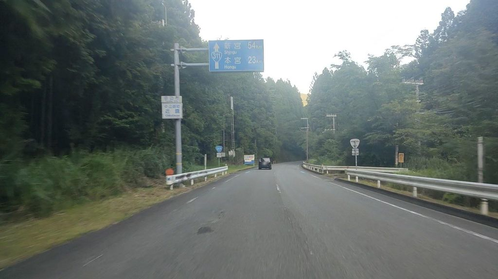
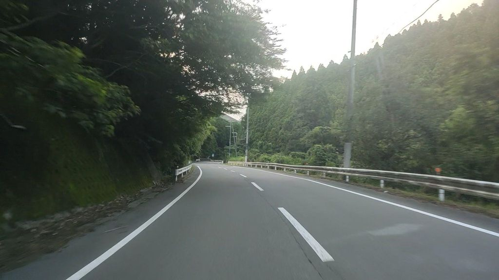
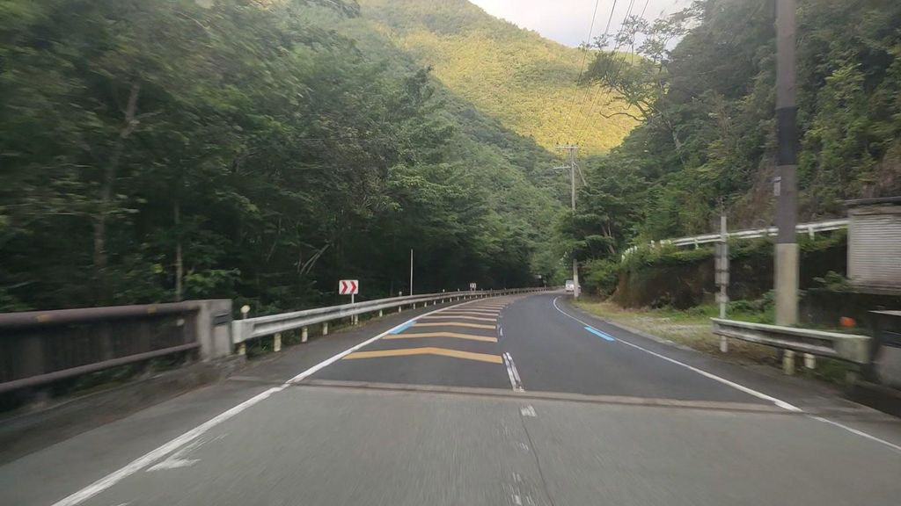
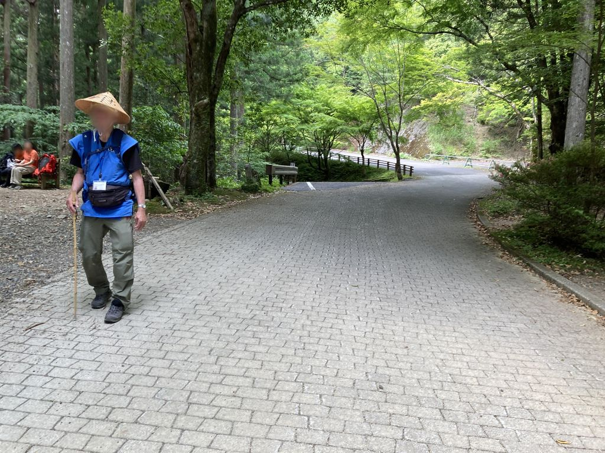
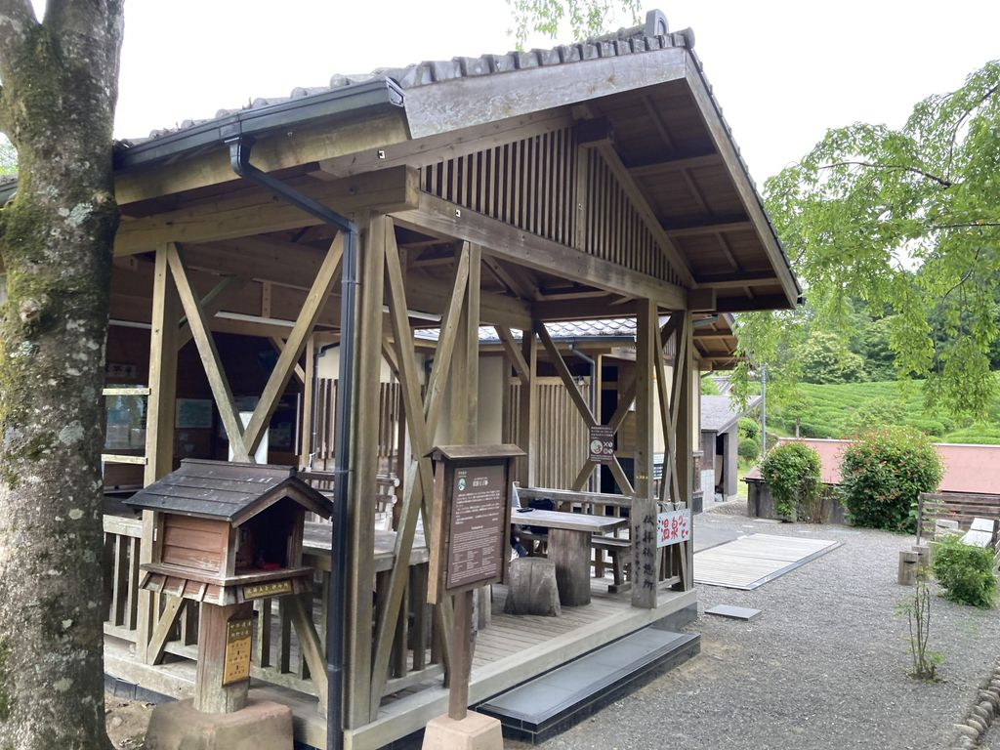
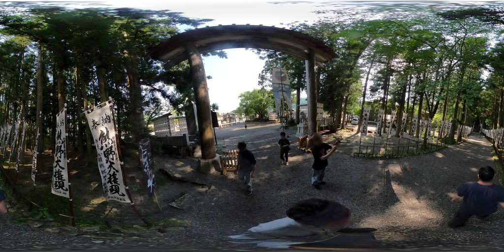

Kumano Kodo
Walk Japan's sacred pilgrimage through cedar forest to the great shrine of Kumano Hongū.
46 km through Japan, ending at Kumano Hongū Taisha. It starts at Takijiri-oji. Your ordinary week counts toward all of it: at 5,000 steps a day that's about 2 weeks, with no flights and no leave. Below are the 15 places you pass, each with its photograph and its story.
- 46km end to end
- 15landmarks
- 2 weeksat 5,000 steps a day
- Kumano Hongū Taishafinishes at

The landmarks of Kumano Kodo
15 landmarks, in walking order. Each photograph is by the person credited beneath it, used as they licensed it.
-

Photo: drivephotograph · Mapillary, CC BY-SA 4.0 Takijiri-oji
The stone gateway where pilgrims purified themselves before entering the sacred Kumano mountains — the traditional start of the Nakahechi.
-
Nezu-oji
A short way above Takijiri stands the ruined site of Nezu-oji, the first of the subsidiary shrines on the climb. Only a marker remains among the cedars. The forest is dense and the path steep. Pilgrims once stopped here to catch their breath before the long ascent to Takahara.
-

Photo: drivephotograph · Mapillary, CC BY-SA 4.0 Daimon-oji
The 'great gate' shrine, where a vermilion torii once marked the threshold of the holy precinct.
-
Jujo-oji
Jujo-oji sits on the ridge amid tall cypress, one of the string of small shrines that measured a pilgrim's progress. The name recalls a measure of cloth once offered here. Birdsong fills the green shade. The path rolls on over wooded saddles toward the halfway village.
-
Oosakamoto-oji
Oosakamoto-oji marks the approach to Chikatsuyu, where the trail begins its descent to the river. The shrine is quiet, wrapped in moss and fern. Terraced fields open below through the trees. The classic overnight halt is close now.
-

Photo: drivephotograph · Mapillary, CC BY-SA 4.0 Gyuba-Doji
A small stone figure of a boy riding an ox and a horse at once — the pilgrimage's most photographed roadside guardian.
-

Photo: drivephotograph · Mapillary, CC BY-SA 4.0 Chikatsuyu-oji
A river-crossing hamlet halfway to Hongu, the classic overnight stop where pilgrims still lodge in family minshuku.
-

Photo: drivephotograph · Mapillary, CC BY-SA 4.0 Tsugizakura-oji
Guarded by giant cedars up to 800 years old, one of the few oji left standing in its original grove.
-
Photo: drivephotograph · Mapillary, CC BY-SA 4.0 Kobiro-oji
A quiet shrine on the long forested climb, where the old stone paving resurfaces underfoot.
-

Photo: drivephotograph · Mapillary, CC BY-SA 4.0 Iwagami-oji
The 'rock deity' shrine deep in the cedar ridges, near the trail's loneliest high stretches.
-
Inohana-oji
Inohana-oji, the boar's nose shrine, stands on the high country before Hosshinmon in a stretch of deep, quiet forest. The old stone steps climb between the cedars. Few walkers linger. Beyond lies the most sacred gate of the whole route.
-

Photo: 24kawa · Mapillary, CC BY-SA 4.0 Hosshinmon-oji
The 'gate of aspiration to enlightenment' — passing it, pilgrims were said to enter the body of the Kumano deity itself.
-
Mizunomi-oji
Mizunomi means the drinking of water, and a spring beside the shrine still runs clear for thirsty pilgrims. Past Hosshinmon the route drops through tea fields and hillside hamlets. The valley of the Kumano River opens ahead. The great shrine is not far now.
-

Photo: 24kawa · Mapillary, CC BY-SA 4.0 Fushiogami-oji
Where the great shrine first comes into view across the valley; pilgrims knelt here to worship from afar.
-

Photo: gatuhiko6051 · Mapillary, CC BY-SA 4.0 Kumano Hongu Taisha
The head shrine of all Kumano — journey's end beneath Japan's tallest torii, where three thousand pilgrim paths converge.
Walking Kumano Kodo
Your watch is already counting these steps. Watch Walks spends them on Kumano Kodo, all 46 km of it, and hands you each landmark as you reach it. There's no route recording, no account and no ads. The Inca Trail is free; this one is a one-time purchase with no subscription.
Other trails in Asia
- Shikoku Pilgrimage 1,200 km · Japan
- Annapurna Circuit 128 km · Nepal
- Jordan Trail 675 km · Jordan
- Lycian Way 540 km · Turkey
- Manaslu Circuit 177 km · Nepal
- Nakasendo Way 530 km · Japan